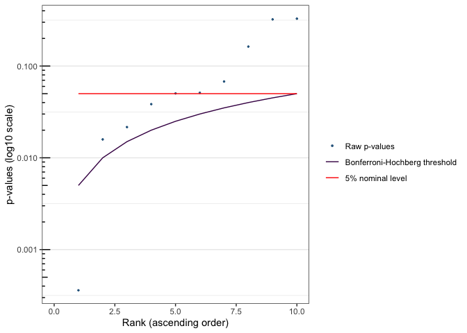
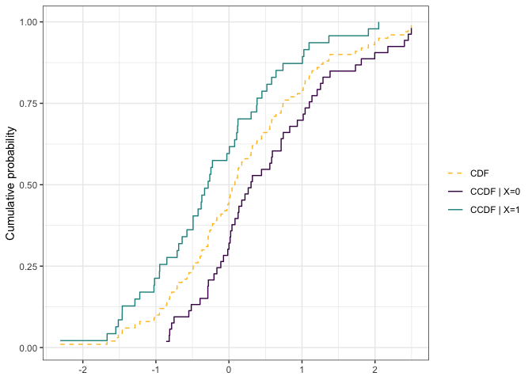

Overview
citcdf is a package to perform conditional independence testing using empirical conditional cumulative distribution function estimations.
The package has two main entry points: cit_multi() for gene-wise conditional independence testing across many outcomes, and cit_gsa() for gene-set analysis. Both accept test = "asymptotic" (large samples) or test = "permutation" (small samples). The single-outcome workhorses cit_asymp() and cit_perm(), the CCDF estimator ccdf(), and the plotting functions plot_compare_ccdf(), plot.cit_multi() and plot.cit_gsa() are also exported.
The approach implemented in this package is detailed in the following article:
Gauthier M, Agniel D, Thiébaut R & Hejblum BP (2021). Distribution-free complex hypothesis testing for single-cell RNA-seq differential expression analysis, bioRxiv doi:10.1101/2021.05.21.445165
Installation
citcdf is available on CRAN:
install.packages("citcdf")The development version is available from GitHub:
# install.packages("remotes")
remotes::install_github("sistm/citcdf")Example
Here is a basic example which shows how to use citcdf with simple generated data.
## Data Generation
set.seed(123)
n <- 100
X <- data.frame(X1 = as.factor(rbinom(n = n, size = 1, prob = 0.5)))
Y <- replicate(10, (X$X1 == 1) * rnorm(n) + (X$X1 == 0) * rnorm(n, mean = 0.5))
# Hypothesis testing
res_asymp <- cit_multi(M = data.frame(Y = Y), X = X,
test = "asymptotic", parallel = FALSE) # asymptotic test
res_asymp$pvals
#> raw_pval adj_pval test_statistic
#> Y.1 0.0003601504 0.003601504 30.418136
#> Y.2 0.3282920437 0.328292044 4.115804
#> Y.3 0.3225103024 0.328292044 4.372046
#> Y.4 0.0384303687 0.085257670 11.802747
#> Y.5 0.0678438958 0.096919851 10.451354
#> Y.6 0.0502973835 0.085257670 12.780768
#> Y.7 0.0158684748 0.072020162 15.581473
#> Y.8 0.0216060487 0.072020162 14.080686
#> Y.9 0.0511546022 0.085257670 8.920593
#> Y.10 0.1628874626 0.203609328 6.991416
plot(res_asymp)
plot_compare_ccdf(Y=Y[, 1, drop=FALSE], X=X)
– Marine Gauthier, Denis Agniel, Sara Fallet, Kalidou Ba, Rodolphe Thiébaut & Boris Hejblum
hex illustration by Jérôme Dubois.